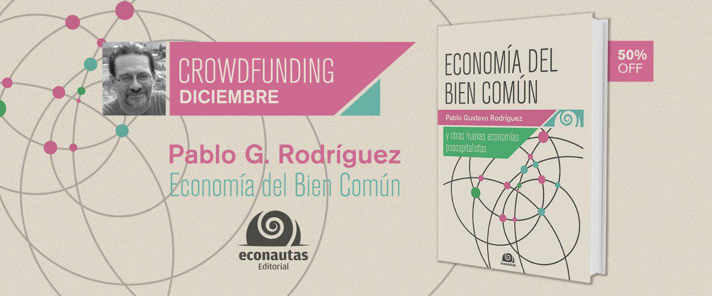

Pablo es un promotor de las nuevas economías solidarias, colaborativas, circulares, p2p, las monedas sociales, el decrecimiento, la transición, el software libre y el florecimiento de las personas y los ecosistemas.

Campaña de crowdfunding del libro “Economía del bien común y otras nuevas economías poscapitalistas”